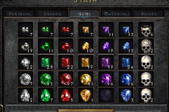
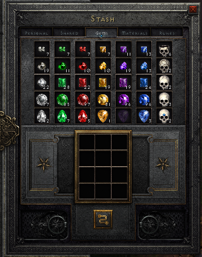

Ein voller Materialslot soll eine Farming-Session erst beenden, wenn der Bot keinen verifizierten Platz schaffen kann. Edelsteine und Schädel werden ab normaler Stufe bis perfekt verdichtet. El bis Ort werden über ihre einfachen Drei-zu-eins-Rezepte aufgewertet. Danach lagert der Bot das zuvor blockierte Item ein und setzt die bestehende Session fort.
Stand · 1. Oktober 202625.0–25.9 bestanden. Phase 25 vollständig implementiert und dokumentiert. Alle drei Rezepte, Pause/Fortsetzen sowie die automatische Navigation aus Persönlich/Gemeinsam und Gems → Runen sind live bestätigt. Die Session-Übersicht zeigt bestätigte Ergebnisse unter „Verdichtet“; der eingebettete Renderer ist synchronisiert.
Gemeinsame StandardregelAutomatisch bei bestätigtem Überlauf. Keine Charaktereinstellung, keine neue Einstellungsoberfläche.
23 erlaubte Rezepte14 Gem-/Skull-Rezepte und 9 Runenrezepte aus dem nachgereichten lokalen CASC-Extrakt.
1. Verbindliche Produktentscheidungen
Ein kleines Fachpaket internal/crafting
Das Paket besitzt Rezeptkatalog, Batch-Planung und die verifizierte Compaction-State-Machine. Stash-Auswahl und Zellnavigation bleiben in internal/loot. Weitere Würfelabläufe können später im selben Fachpaket ergänzt werden. Phase 25 baut ausschließlich Materialverdichtung.
Gems/Skulls: Alle sieben Materialfamilien, jeweils normal → makellos → perfekt. „Normal“ bezeichnet die Gem-Stufe, nicht ItemQualityNormal. Lädiert und fehlerhaft bleiben erhalten. Perfekt ist die Endstufe.
Runen: Nur El, Eld, Tir, Nef, Eth, Ith, Tal, Ral und Ort als Zutaten. Ort darf Thul erzeugen. Thul als Zutat und alle Rezepte mit Zusatzgem bleiben außerhalb des Katalogs.
Auslöser: Ein zulässiges Keep-Item konnte nach den bisherigen Stash-Versuchen nicht transferiert werden; der frische gemeinsame Materialbestand bestätigt seinen vollen Slot. Ein bloßer stash_failed-Reason autorisiert keine Verdichtung.
Gem-Kette: Bei normalem Material darf derselbe Auftrag normal und makellos derselben Familie verarbeiten. Bei makellosem Material verarbeitet er ausschließlich makellos. Andere Farben, Schädel oder niedrigere Stufen bleiben unangetastet.
Runen-Batch: Genau eine Aufwertungsstufe des blockierten Runentyps. Ein voller Zielslot endet mit Speicher-voll; keine rekursive Verdichtung weiterer Runentypen.
Truhen-Würfel: Ein Cube im persönlichen Inventar stellt unter den Truhenitems das eingebettete 3×4-Raster samt Transmute-Button bereit. Genau ein Strg+Shift+Rechtsklick auf den Quellslot lädt die drei Rezeptzutaten in dieses Raster. Ein Strg+Shift+Linksklick auf die gebundene Output-Unit lagert das Ergebnis zurück. Der gesamte Auftrag bleibt in der offenen Truhe; danach genügt ein leerer Cube für den normalen Stash-Retry.
Default: Für alle unterstützten Offline-Charaktere aktiv. Keine YAML-Option, Profileinstellung, Reservekonfiguration oder API zum Einschalten. Verdichtung beginnt ausschließlich bei Überlauf, nicht präventiv.
Bestände: Die Materialtabs sind gemeinsam genutzt. Jeder Auftrag liest ihren aktuellen, gültigen Speicherbereich neu. Charakter-, Session- und History-Zähler sind keine Bestandsquelle.
Ende: Ein erfolgreicher Auftrag hinterlässt einen leeren Würfel, bestätigt das Einlagern des blockierten Items und setzt den gleichen Queue-Eintrag fort. Ein nicht lösbarer Speicherüberlauf beendet die Session mit verständlichem Itembezug.
Inventarreserven, generisches Crafting, Charm-Rerolls, Runen ab Thul, Trankrezepte, Shared-Stash-Raster als Ausweichlager, Droppen oder Verkaufen zur Platzbeschaffung und Änderungen an Spielständen gehören nicht zu Phase 25. Der vorhandene Cow-Portal-Executor bleibt als eigener Ablauf bestehen.
2. Belegter Ist-Zustand
Der Cow-Versuch am 30. September 2026 endete um 11:14:42 CEST. Unit 809, Code glr, blieb nach drei Ctrl-Klicks in Inventarzelle 9,2. loot.stash meldete verify_timeout; stash_items und anschließend die Session endeten mit stash_failed. Das Log enthält keinen Materialzähler und beweist die 99er-Grenze dieses Falls nicht selbst.
Keep-Auswahl, Inventarschutz, Retry und Memory-Verifikation bleiben. failActive loggt die Ursache, gibt sie aber nicht strukturiert zurück und verwirft den aktiven Zustand.
Vorbild für gebundene Zutaten, frische Generationen, exakten Inhalt und einmaliges Transmute. Seine Portalbindung und alleinstehende Würfelgeometrie werden nicht auf den eingebetteten Stash-Würfel übertragen.
Vorbild für Itembindung und Verifikation nach einem gesendeten Input. Keine Wiederholung eines möglicherweise bereits ausgeführten Transfers.
memory.UIState / world.UIState
Stash und Cube sind modelliert; aktiver Materialtab, Speicherbereich und Materialzähler fehlen. Normale Quantity-Stats sind dafür nicht live validiert.
ClickAtWithModifier bietet einen atomaren Klick mit einem Modifier. Ctrl+Shift benötigt einen gleichwertigen Vertrag für beide Modifier.
Task-Timeout und History
Der normale Step-Timeout beträgt im Beispiel 45 Sekunden. Ein größerer Batch braucht ein eigenes endliches Zeitfenster. Fehlermeldungen kennen stash_failed derzeit nicht spezifisch.
Die vorhandene Stash-Dokumentation nennt Sammeltabs noch unbegrenzt und charaktergebunden. Beide Aussagen werden bei der Feature-Umsetzung durch den belegten gemeinsamen Speichervertrag ersetzt.
3. Zuständigkeiten und Interface
Modul
Besitzt
Abhängigkeit
tools/generate-crafting-catalog
Striktes CASC-Subset, Herkunft und generierte Rezeptdaten.
cubemain.txt und misc.txt; keine Spieldateischreibzugriffe.
internal/memory → internal/world
Belegte Rohreads → semantischer Collection-Speicher, Tab und bekannte Materialzahlen. Vorhandene Items belegen Cube und Würfelinhalt.
Read-only Prozesszugriff. Fachentscheidungen verwenden nur World-Evidenz.
internal/loot
Stash-Kandidat, belegtes Collection-Layout und primitive Tab-/Zell-/Button-Aktionen.
World State und internal/input; kennt keine Batch- oder Aufwertungsstrategie.
internal/crafting
Rezeptlookup, deterministischer Plan, Zutaten-/Outputbindung, Fortschritt und endliche State-Machine.
World State und schmales injiziertes Input-Interface; importiert weder Raw Memory noch Loot, App oder Tasks.
internal/app
Adapter zwischen Crafting-Input und Loot-Collection-Aktionen, Telemetrie und Lifecycle-Wiring.
Neue kleine Compaction-Dependency; keine Zellkoordinaten oder Rezeptlisten.
Im Crafting-Paket genügen catalog.go, planner.go, executor.go und gezielte Tests. Das öffentliche Interface startet beziehungsweise tickt einen Auftrag mit unveränderter Triggerbindung und liefert Pending, verifizierten Fortschritt, Success oder einen strukturierten Fehler. Reset löscht Bindungen ohne Input.
Das injizierte Input-Interface umfasst Tabwahl, das Laden eines vollständigen Zutatensatzes mit einem Rechtsklick, einmaliges Transmute und den Rücktransfer eines gebundenen Outputs mit einem Linksklick. Jeder Aufruf ist eine einzelne bereits durch World-Evidenz freigegebene Aktion. Der Executor entscheidet über Reihenfolge und Erfolg; der Adapter übersetzt in das belegte Layout. Die vorhandene Einzeleinheit-Aktion WithdrawOne bleibt dem isolierten Transfer-Test vorbehalten und wird nicht dreimal pro Rezept aufgerufen. Tests ersetzen das Interface und treiben denselben produktiven Executor.
Die Typnamen für neue Evidenz dürfen nach der Live-Kalibrierung festgelegt werden. Zuständigkeiten und Verhalten sind verbindlich. Es entsteht kein Registry-System für beliebige Rezepte, keine generische UI-Automation und keine Verlagerung des Cow-Rezepts in dieser Phase.
4. Autoritative Daten und neue Evidenz
Rezeptkatalog
.tmp/d2r-excel/cubemain.txt liegt jetzt vor. Der geprüfte SHA-256 lautet C2AF6EF0C6EBF9EF5923CCF94CBD0CD1449AA46BDF469C07C8F170FC10E19785. Der Hash bezeichnet den Planungsstand, ersetzt aber nicht die stabile Zeilenreferenz. Der Generator hält Herkunftsdatei, description und das normalisierte Zutaten-/Outputpaar fest.
Familie aus misc.txt
Normale Stufe
Makellose Stufe
Perfekte Stufe
Amethyst
gsv
gzv
gpv
Rubin
gsr
glr
gpr
Saphir
gsb
glb
gpb
Topas
gsy
gly
gpy
Smaragd
gsg
glg
gpg
Diamant
gsw
glw
gpw
Schädel
sku
skl
skz
Die 14 Zeilen heißen jeweils 3 Standard … -> Flawless … oder 3 Flawless … -> Perfect …. Bei Schädeln sind es 3 Standard Skulls -> Flawless Skull und 3 Flawless Skulls -> Perfect Skull. Die neun Runenzeilen reichen von 3 El Runes -> Eld Rune bis 3 Ort Runes -> Thul Rune; Zutaten r01 bis r09, Outputs r02 bis r10.
Der Generator akzeptiert für diese Allowlist ausschließlich enabled=1, numinputs=3, genau input 1=<code>,qty=3, leere weitere Zutaten und genau einen bekannten Outputcode ohne Modifikatoren. Zusätzliche Outputs, Bedingungen, Klassen-/Ladder-Bindungen oder abweichende Mengen brechen die Generierung mit Zeilenkontext ab. version ist hier 0 bei Gems/Skulls und 100 bei Runen; das ist ein CASC-Rezeptfeld, kein D2R-Prozessversionsgate. Alle beteiligten Itemcodes und Maße werden gegen den lokalen misc.txt-Katalog geprüft.
Collection-Snapshot
Ein konsistenter World-Snapshot trägt den aktuellen gemeinsamen Speicherbereich mit Known-Flag, aktiven Truhenbereich mit Known-Flag und die benötigten Materialzahlen samt Verfügbarkeit. Basic (Persönlich/Gemeinsam) und Materials sind gültige Startbereiche für die Navigation; Materialaktionen benötigen den bestätigten Gems-/Runen-Zieltab. Die vorhandenen persönlichen Inventar-/Cube-Items belegen den getragenen Cube und seinen Inhalt. Ein eigenes Open-/Close-Feld für das Truhenraster ist nicht erforderlich.
Ein bestätigter leerer Slot ist bekannte 0. Ein nicht sichtbarer oder ungelesener Slot ist unknown. Fehlende Items oder leere normale Stat-Listen dürfen keine Collection-0 erfinden.
Scope unterscheidet die tatsächlich getrennten Offline-Speicherbereiche des unterstützten Clients. Der konkrete Read und dessen Semantik gehören in Gate 25.1. Kein aus Charaktername, Difficulty oder Save-Dateiname zusammengesetzter Ersatz.
Die vorgegebene Materialkapazität beträgt 99; Reads außerhalb 0…99 bleiben ungültig. Ein vorhandener sichtbarer Bestand dient zum Live-Abgleich der Quelle. Quelle, Ziel und Tab müssen aus demselben gültigen Snapshot stammen. Stale Daten, Prozesswechsel oder ein Scope-Wechsel widerrufen jeden Auftrag.
Die nach einem Transfer im Würfel erzeugten Units werden dort nach Code, Location und neuer UnitID gebunden. Ein Collection-Zähler ist keine einzelne Item-Unit.
Aktionsnachweise vollständig
25.4 belegt Memory-Reads, Tab-/Zellkoordinaten, Cube-Raster, Linksklick-Transfers und Settle. In 25.8 sind Rechtsklick-Zutatenladen, Transmute und Rücklagerung für beide Gem-Stufen und El → Eld sowie die Navigation aus Persönlich/Gemeinsam live bestätigt. Das produktive Settle beträgt 300 ms; frische passende Memory-Evidenz bleibt vor jedem Materialklick erforderlich. Ein Screenshot oder Zeitdelay ersetzt keinen Spielzustand.
5. Deterministische Batch-Planung
Der Planer erzeugt vor dem ersten Transfer eine endliche Liste einzelner Drei-zu-eins-Rezepte. Er simuliert Bestände einschließlich aller Zwischenprodukte und hält für jeden Rezeptschritt die erwarteten Vorher-/Nachherzahlen fest. Kapazität 99 ist die vereinbarte Produktregel. Ihr Randverhalten wird automatisch geprüft; dafür muss kein Materialslot live gefüllt werden. Die vorhandenen Gems haben in misc.txtmaxstack=0.
Makelloses Material und niedrige Runen
Rezeptanzahl = min(floor(Quellbestand / 3), 99 - Zielbestand)
Makellos: nur die gleiche perfekte Gem-/Skull-Familie als Ziel.
Runen: nur die unmittelbar nächste Rune als Ziel.
Es wird der maximal mögliche Batch des auslösenden Materials geplant. Danach bleibt im Würfel nichts liegen. Bei null Rezepten lautet das Ergebnis Speicher-voll. Vollständige perfekte Slots und volle Runenzielslots lösen keine weiteren Rezepte aus.
Normales Gem-/Skull-Material
Wenn die perfekte Endstufe bereits 99 enthält, Auftrag ohne Materialinput mit Speicher-voll ablehnen.
Solange mindestens drei normale Einheiten vorhanden sind: Ist der makellose Slot voll, zuerst genau ein makellos → perfekt planen, sofern perfekt Platz hat. Dann normal → makellos planen. Ist der volle Zwischenplatz nicht freizumachen, diese Schleife beenden.
Danach makellos → perfekt planen, solange mindestens drei makellose Einheiten vorhanden sind und perfekt Platz hat. Vorhandene makellose Bestände derselben Familie dürfen dabei mitverarbeitet werden.
Den gesamten Plan nur freigeben, wenn er im ursprünglich blockierten Slot mindestens einen freien Platz schafft. Andernfalls Speicher-voll ohne Materialinput. Ein reines Verschieben des Problems ist kein Auftragserfolg.
Bei Erreichen der perfekten Obergrenze während eines geplanten Batches dürfen normale oder makellose Reste liegen bleiben. Erfolg verlangt freien Platz für das blockierte Item, keine vollständige Leerung aller Stufen. Die andere Gem-Stufe darf dabei nie über 99 wachsen. Bei normalen Mengen bis 99 und makellosen Mengen bis 99 hat dieser Plan höchstens 33 + 44 = 77 Rezepte. Runen und direkt makellose Batches haben höchstens 33.
Auslöser und Bestände vorab
Verbindliches Ergebnis vor Stash-Retry
Makelloser Rubin 99, perfekt 0
33 Rezepte; makellos 0, perfekt 33.
Makelloser Rubin 99, perfekt 90
9 Rezepte; makellos 72, perfekt 99. Danach passt das blockierte Item.
Normaler Smaragd 99, makellos 0, perfekt 0
33 normale und 11 makellose Rezepte; normal 0, makellos 0, perfekt 11.
Normaler Smaragd 99, makellos 99, perfekt 0
Zwischenplatz zuerst freimachen; insgesamt 77 Rezepte; normal 0, makellos 0, perfekt 44.
Normaler Smaragd 99, makellos 99, perfekt 98
Ein makelloses Rezept und drei normale Rezepte; normal 90, makellos 99, perfekt 99. Originalslot hat Platz.
Normal oder makellos voll, perfekt bereits 99
Speicher-voll; keine Entnahme, kein Transmute.
El 99, Eld 90
9 Rezepte; El 72, Eld 99. Keine Eld-Verdichtung.
Ort 99, Thul 0 / Thul 99
33 Ort-Rezepte / Speicher-voll. Thul bleibt immer als Zutat ausgeschlossen.
Der Plan berücksichtigt nur Collection-Zutaten. Das blockierte Inventaritem wird nicht selbst als Rezeptzutat verbraucht. Ein zweites gehaltenes Item derselben Familie wird anschließend über den normalen Stash-Scan verarbeitet. Nach erfolgreicher Platzbeschaffung darf dieser Scan niemals denselben bereits erfolglos wiederholten Trigger erneut in Crafting schicken.
6. Ausführung pro Tick
Überlauf bestätigenItem, Scope, Rezept und Batch binden.
Materialtab auswählenGems oder Runen; aktiven Tab verifizieren.
Zutaten mit einem Rechtsklick ladenQuellzahl −3 und drei neue Cube-Units bestätigen.
Rezept genau einmal auslösenExakter Würfelinhalt; frisches Ergebnis.
Output zurücklagernZielzahl +1 und leerer Würfel.
Geplanten Batch fortsetzenNeuer Rezeptindex, neue Unitbindungen.
Abschluss bestätigenCube leer und Truhe weiterhin offen.
Gültiges In-Game in Rogue Encampment, unterstützte Version und 1280×720, Stash offen, Inventar konsistent, Cube vorhanden und leer, kein Cursoritem. Trigger liegt unverändert als ungelocktes Keep-Item im Inventar. Erst dann Plan → Tabwahl.
Ein absoluter Tabklick, sofern nötig; fresh aktive-Tab-Evidenz und belegtes Settle abwarten. → Zutaten laden.
Gesendeter Klick, Startzeit und Snapshot-Generation.
withdraw_ingredients / verify_withdrawal
Bei leerem Cube und mindestens drei bekannten Zutaten genau ein Strg+Shift+Rechtsklick auf die belegte Materialzelle. Erst ein frischer Snapshot mit Quellzahl −3 und exakt drei neuen passenden eigenen Cube-Units bestätigt den vollständigen Zutatensatz. → Inhalt prüfen. Unvollständige Bestätigung wartet höchstens das Aktionsbudget; kein weiterer Entnahmeklick und kein Auffüllen per Linksklick.
withdrawSent vor dem Input setzen; Ausgangsbestand und Generation binden. Nach Bestätigung genau drei verschiedene Zutaten-UnitIDs und ihre gelesenen Cube-Zellen binden. Keine Annahme über Ablagereihenfolge oder erste Zelle.
verify_contents / transmute
Fresh Snapshot mit exakt den drei gebundenen Zutaten, gültigem Tab, getragenem Cube und gleichem Scope. Ein Klick auf den Transmute-Button in der Truhe → Ergebnis prüfen.
transmuteSent, Rezeptindex und Generation vor dem Input.
verify_result
Alle drei Zutaten-Units sind verbraucht; exakt eine neue Unit mit geplantem Outputcode liegt im Cube. Partieller Verbrauch, fremde Unit oder unbekannte Evidenz führt zum Fehler. → Rücktransfer.
Neue Output-UnitID und Cube-Zelle. Verschwinden der Zutaten allein ist kein Erfolg.
store_output / verify_store
Genau ein Strg+Shift+Linksklick auf die gelesene Zelle der gebundenen Output-Unit im Cube. Fresh Snapshot bestätigt Zielzahl +1 und leeren Cube. → nächstes Rezept oder Abschluss.
Einmal-Markierung für den Rücktransfer, letzter verifizierter Bestand.
finish
Leeren Cube, freien Triggerplatz und weiterhin offene Truhe bestätigen. Ohne weiteren UI-Klick → Task-Stash-Retry.
Verifizierte Batch-Summe. Triggerbindung bleibt bis zum Retry erhalten.
Pro Tick höchstens eine Input-Transaktion. Ein atomarer Ctrl+Shift-Klick hält beide Tasten unter derselben Gameplay-Lease und gibt Maus sowie Modifier auch bei Fehlern wieder frei. Keine Kombination aus getrennten PressKey-Aufrufen.
Das Spiel bestimmt die Transfermenge des Rechtsklicks; Crafting bestätigt sie gegen den CASC-Rezeptkatalog. Alle 23 erlaubten Rezepte benötigen genau drei Zutaten. Der Hinweis auf automatisch zwei Zutaten bei höheren Runen erweitert weder Katalog noch Scope. Keine eigene Auswahl zwischen zwei und drei, keine Entnahmeschleife und kein Linksklick-Fallback.
Jede Verifikation verlangt eine neuere gültige Snapshot-Generation als der auslösende Input. Wiederholte oder ungültige Frames erzeugen weder Erfolg noch weitere Eingaben.
Entnahmen, Transmute und Rücktransfer werden bei unklarem Ergebnis nicht erneut gesendet. Jede Rezeptinstanz hat eigene Einmal-Markierungen; der nächste Rezeptindex ist erst nach verifiziertem Rücktransfer zulässig.
Unverändert volle Fenster, Bestandsdrift, Fokusverlust, Scope-/Prozesswechsel oder fremder Cube-Inhalt widerrufen die Freigabe. Zeitbudgets laufen weiter, während Evidenz fehlt.
Jede Aktionsbestätigung hat maximal 3 Sekunden aktive Wartezeit; ein vollständiger Auftrag maximal 240 Sekunden aktive Zeit. Diese zentralen Codekonstanten sind keine Charaktersettings. Das belegte Layout-Settle wird separat in Gate 25.4 festgelegt.
Pause nutzt den bestehenden aktiven Task-Zeitvertrag und sendet keinen Input. Resume liest alle offenen Bestätigungen erneut; withdrawSent, transmuteSent und die Rücktransfer-Markierung bleiben erhalten. Not-Stopp beendet Input sofort, ohne Cleanup-Klicks.
Bei Fehlern bleiben Zutaten oder Output gegebenenfalls im Würfel. Kein automatisches Zurückrollen, Droppen, Wiederholen oder neuer Cow-Start. Die Session meldet gegebenenfalls „Bitte prüfe den Horadrimwürfel.“. Reset löscht Softwarezustand, keine Spielitems.
7. Einbindung in Stash, Session und Telemetrie
StashResult erhält eine strukturierte Fehlerursache. Nur verify_timeout bei unverändertem Item und bestätigtem vollen Materialslot darf einen Compaction-Request ergeben. target_changed, policy_changed, Inputfehler und unsichere Grids bleiben Fehler.
Die bestehende App-Adapterstelle TickStash übergibt einen gebundenen Request an den gemeinsamen Task-Return-Zustand. Ein Request bestätigt keinen Stash-Erfolg. Andere Itemtypen folgen dem bisherigen Verhalten.
Der gemeinsame Ablauf wählt bei diesem Request den neuen Step compact_storage und nach dessen Erfolg erneut stash_items. Countess, Mephisto, Summoner, Nihlathak, Cows, Lower Kurast und isolierte Stash-/Loot-and-return-Phasen verwenden dieselbe Implementierung; keine Cow-Sonderlösung.
Der neue Step verwendet maximal 240 Sekunden aktive Zeit statt des allgemeinen 45-Sekunden-Defaults. Ein nachfolgender normaler Stash-Step erhält seinen gewöhnlichen Timeout. Ein bestehender Stash-Wartezustand darf während der Verdichtung keine zweite Transaktion senden.
Pro Stash-Besuch ist jede Trigger-UnitID höchstens einmal für Compaction zulässig. Nach einem Batch wird der ursprüngliche Keep-Kandidat erneut geprüft und über den normalen Executor eingelagert. Ein erneuter Fehlschlag derselben Unit beendet den Ablauf; andere Kandidaten dürfen einen eigenen Auftrag starten.
Der zentrale Run-Reset räumt Crafting-Dependency, Pending-Request und Trigger-Historie auf. Ein gewöhnlicher Step-Wechsel löscht keine noch benötigte Bindung. Not-Stopp, Game-/Prozesswechsel und neue Run-Generation können einen halbfertigen Auftrag niemals übernehmen.
Beobachtbarkeit ohne neue Einstellungsfläche
compact_storage gehört zur bestehenden History-Stage return_town. Das Dashboard kann weiterhin „Truhe“ anzeigen. Die bestehende Session-Übersicht erhält auf Operatorwunsch eine eigene aufklappbare Kategorie „Verdichtet“. Konfigurierbare Policies und ein Crafting-Dashboard bleiben aus. Lokalisierte Fehlertexte mit Itembezug sind erforderlich.
Log und JSONL erfassen storage_compaction_started, bestätigte Rezeptzyklen und storage_compaction_completed beziehungsweise storage_compaction_failed. Felder enthalten Triggercode/-UnitID, Rezeptschlüssel, Quell-/Zielcode, verifizierte Mengen, Rezeptindex und Reason. Pro Input nennt das strukturierte Log Aktion, Zweck und Ergebnis. Ein fehlgeschlagener verpflichtender Telemetrie-Emit blockiert den nächsten Input.
Compaction-Outputs sind keine Drops oder Pickups. Ihre Rücktransfers erzeugen kein stash_success für neu gefarmten Loot und erhöhen weder Keep-Ausbeute noch Farming-Durchsatz. Nur das nach dem Batch normal eingelagerte Triggeritem erhält seine bestehende Pickup-/Stash-Kette.
Replay-Grenze
Neue World-Felder und die neue Task-Dependency werden in internal/replay normalisiert, aufgezeichnet und decodiert. Fehlt Collection-Evidenz im Trace, bleibt sie unknown. Der vorhandene Task-Replay prüft Übergänge, Requests und Dependency-Antworten; er führt nicht automatisch die intern aufgezeichneten Crafting-Entscheidungen erneut aus. Deren Reihenfolge wird zusätzlich mit demselben produktiven Crafting-Executor gegen kleine World-Frame-Folgen und einen protokollierenden Fake-Input geprüft. Keine angebliche Transmute-Abdeckung durch bloßes Replay eines fertigen Success-Results.
Für einen zeitlichen Live-Fehler --runtime-trace-capture verwenden, den relevanten Frame-Verlauf in ein bereinigtes Executor-Fixture überführen und nach einer Korrektur gezielt live prüfen. Die bestehende opt-in Aufnahme- und Speicherpolicy bleibt erhalten; insbesondere wird ein erfolgreicher Lauf nicht allein durch das Capture-Flag automatisch persistiert.
8. Fehlervertrag und minimale UI-Änderung
Reason
Auslöser und Verhalten
Deutscher Operator-Text
storage_gem_full
Perfekte Endstufe bereits voll, blockiertes perfektes Gem/Skull oder kein kapazitätssicherer Gem-Plan. Kein Materialinput.
„Edelsteinlager für {item} ist voll. Bitte schaffe Platz in der Truhe.“
storage_rune_full
Nächste Runenstufe voll oder voller Runenslot ohne freigegebenes Rezept. Keine rekursive Rune-Compaction.
„Runenlager für {item} ist voll. Bitte schaffe Platz in der Truhe.“
storage_state_unavailable
Benötigter Bestand, Tab, persönlicher Cube oder Scope nicht konsistent lesbar. Keine geratenen Eingaben.
„Der Inhalt der Materialtruhe konnte nicht sicher gelesen werden.“
storage_cube_not_empty
Würfel bei Preflight belegt oder Cursor trägt ein Item. Vor Entnahme stoppen.
„Bitte leere den Horadrimwürfel und lege das Item am Mauszeiger ab.“
storage_compaction_unconfirmed
Gesendete Aktion unbestätigt, unerwarteter Bestand, falscher Inhalt, Scope-Wechsel oder partieller Rezeptverbrauch. Keine Wiederholung.
„Die Verdichtung konnte nicht sicher abgeschlossen werden. Bitte prüfe Truhe und Horadrimwürfel.“
storage_compaction_timeout
240-Sekunden-Auftragsbudget erschöpft. Kein neues Rezept und kein Folgeversuch.
„Die Verdichtung hat zu lange gedauert. Bitte prüfe Truhe und Horadrimwürfel.“
stash_failed
Sonstiger Stash-Fehler oder erfolgloser Transfer nach bereits bestätigter Compaction.
„{item} konnte nicht in die Truhe gelegt werden.“; ohne Itemkontext allgemeiner Truhentext.
Strukturierter Fehlerkontext enthält den ursprünglichen Triggercode und, bei vollem Ziel, den tatsächlich vollen Materialcode. Task-Ergebnis, Session-Status, JSONL, API und bestehende History-/Dashboard-Presenter müssen diesen Kontext erhalten. Die UI lokalisiert Itemcodes über den vorhandenen Game-Katalog; sie baut keinen Text durch Zerlegen englischer Itemnamen. Derselbe Reason bekommt eine englische Übersetzung. Bei Schädeln wird ein passender Materialname eingesetzt.
Speicher-voll und unbestätigte Compaction sind terminale Sessionfehler. Sie werden nicht in Phase-24-Retry-Listen aufgenommen. Kein Save-&-Exit-Neustart behebt einen gemeinsam vollen Slot. Der Operator räumt seinen Speicher selbst auf.
9. Sequenzielle Gates
Jedes Gate beginnt erst nach dem belegten Erfolg des vorherigen. Auto bedeutet gezielte Tests oder Generator ohne D2R. Live bedeutet einen kontrollierten Offline-Versuch auf dem unterstützten Client mit vorbereitetem Spielzustand. Der jeweilige Umsetzungsauftrag bestimmt die autorisierten Live-Schnitte; eine bestehende Autorisierung wird nicht erneut abgefragt. Fehlt ein benötigter Zustand oder Capture, wird er konkret benannt und das Gate bleibt offen. Vorbereitende Diagnosearbeit ist innerhalb des aktuellen Gates erlaubt.
Manuelle Tests verwenden den vorhandenen Spielbestand. Für den Bestandsread reicht ein Capture mit einem konkreten sichtbaren Vergleichswert. Mengen 0/1/98/99, volle Zwischen-/Zielslots und seltene Fehler werden mit automatisierten Fixtures geprüft. Layoutaufnahmen benötigen keine befüllten Zellen; die Kalibrierung und Auswertung übernimmt der Agent. Ein zusätzlicher Capture wird nur für einen benannten fehlenden Read oder UI-Anker angefordert. Bereits vorhandene Belege werden wiederverwendet.
Ein Gate-Nachweis nennt Datum, geprüften Commit oder lokalen Diffstand, exakten Befehl, Pass/Fail und relevante Artefaktpfade. Ausgeführte Nachweise stehen in standardmäßig geschlossenen details-Bereichen; Status und Abschlusskriterium bleiben sichtbar. Reads und Koordinaten werden erst nach ihrem Beleg festgeschrieben. KISS gilt auch für die Validierung: eine gezielte Prüfung pro abgeschlossenem Änderungsschnitt. Bestehende Tests anpassen, denselben Vertrag nicht nochmals als Smoke-, Integrations- und Regressionstest nachbauen. Wiederholung nur nach Fehler oder relevanter neuer Änderung. Kein Gesamtlauf oder Release-Build.
Neue und geänderte exportierte Go-Symbole erhalten im jeweiligen Gate sofort Godoc. Invarianten und State-Übergänge werden direkt am relevanten Code dokumentiert. 25.9 prüft die Vollständigkeit; es verschiebt diese Pflicht nicht ans Phasenende.
25.0AUTO · BESTANDEN
CASC-Rezepte und reproduzierbarer Diagnoseeinstieg
Generator und minimales internal/crafting-Katalogmodell anlegen. Genau die 23 Rezepte aus Abschnitt 4 generieren und gegen misc.txt prüfen. Kleine quellgetreue Fixtures mit stabilen Zeilenschlüsseln einchecken.
Einen read-only --storage-inspect-Diagnoseeinstieg über bestehende Probe-/UI-Capture-Muster hinzufügen. Er sendet keinen Input und erfasst vorhandene Item-, UI- und benötigte begrenzte Forschungsdaten mit Capture-Label und Prozessversion. Noch keine vermeintlich bekannten Collection-Felder erzeugen.
Aus dem realen Logfall einen kleinen bestehenden-Stash-Test ableiten: unverändertes Gem nach drei Versuchen, Ursache verify_timeout. Dieser Test dokumentiert den heutigen Ausgangspunkt, noch keine erfolgreiche Recovery.
Bestanden: Genau 14 Gem-/Skull- und 9 Runenrezepte, keine unzulässigen Zeilen; negative Generatorfälle lehnen zusätzliche Zutaten und Outputs ab. Diagnose läuft ohne Input. Der Stash-Ausgangspunkt ist deterministisch reproduzierbar. Nur betroffene Generator-/Loot-/App-Checks ausführen.
Nachweis vom 30. September 2026 · bestanden
Geprüft wurde der lokale, nicht committete Gate-25.0-Code auf Basis von 40c840ded21951cd3a7bce3bf54155b53b97b453. Manifest und Build liegen unter .tmp/phase25/verification.json und .tmp/phase25/d2rbot.exe. Der SHA-256 des Code-Manifests lautet d1d6a507c73312d9e58e78f63e7bc648422b0f5387e9eb3bb1647eeea7751c92, der EXE-SHA-256 03032e39c4231ed9fec75e8ec78e640f21bc81198211d20642259b8d8a8a9790. Das Manifest bindet die sortierten Code-/Fixture-Pfade und ihre Datei-Hashes; Dokumentationsänderungen gehören nicht in diesen Code-Hash.
go generate ./internal/crafting
go test -count=1 ./tools/generate-crafting-catalog ./internal/crafting
go test -count=1 ./internal/loot -run 'TestStash'
go test -count=1 ./internal/app -run 'Test(StorageInspect|ValidateRunMode|ResolveActiveRun|SessionExecutionRequested|CharacterLoadoutRequired|ResolveRunsInspect|WaypointTargetsInspect)'
go test -count=1 ./cmd/d2rbot -run 'Test(StorageInspect|ShouldRunSession|ValidateDesktopMode|RuntimeReplayMode)'
go build -o .tmp/phase25/d2rbot.exe ./cmd/d2rbot
Alle Befehle bestanden, jeder gezielte Testlauf genau einmal. Der CLI-Help-Smoke bestätigt beide neuen Flags. Keine Gesamtsuite, kein Release-/Installer-Build und kein Live-Capture ausgeführt.
Die vollständigen lokalen CASC-Dateien erzeugen denselben Katalog wie die 23 unveränderten Rezept- und 31 Item-Fixturezeilen. Zusätzliche Zutaten, beide zusätzlichen Outputs, Mengenabweichungen, Modifikatoren, Bedingungen, Klasse, Ladder-Bindung, deaktivierte Rezepte, Versionen sowie ungültige Itemmaße werden abgelehnt.
TestStashFlawlessRubyLogBaselineThreeUnchangedAttempts bestätigt Unit 809, glr, Zelle 9,2, drei Ctrl-Klicks auf 1160,451 und genau einen terminalen verify_timeout. Er ergänzt keine Recovery und behauptet keinen 99er-Zähler.
Die Diagnose läuft in einem Test mit nicht vorhandenem Input-Controller und Task-Runner. Sie unterdrückt auch konfigurierte Runs/Queues und übernimmt die tatsächliche Prozessversion statt der konfigurierten Version. Forschungslesefehler und Abbruch ohne Samples bleiben sichtbar; publizierte Daten besitzen eigene Kopien.
Zwölf gültige Samples enthalten bestehende Item-/UI-Evidenz, getrennte Item-Statlisten und das vorhandene 64-KiB-Forschungsfenster. Die Zusatzreads sind sequenziell. ui_unchanged belegt nur gleiche UI-Bytes; Collection-Counts, Tab und Scope bleiben unvalidiert.
Die Feature-Dokumentation, ihr Index und ein eng gefasster Unreleased-Eintrag beschreiben bereits dieses neue Paket und den Diagnosemodus. Die vollständigen Verhaltens-/Architektur-Nachträge aus 25.9 bleiben dort; spätere Gates wurden nicht implementiert.
25.1LIVE · BESTANDEN
Einen vorhandenen Bestand read-only abgleichen
Gems-Tab mit dem vorhandenen Bestand öffnen und genau einen --storage-inspect-Capture aufnehmen. Der mitgelieferte Screenshot ist die Referenz.
Der Agent identifiziert die tatsächliche Collection-Memory-Quelle und liest den Vergleichswert aus: normaler Rubin, Code gsr, Bestand 22. Ändert sich der Bestand bis zur Aufnahme, gilt die dann sichtbare Menge mit passendem Screenshot.
Der Agent dokumentiert Quellstruktur, Verfügbarkeit, Gems-Tab und Speicherkontext. Fehlende Runen-/Tab-Evidenz bleibt ausdrücklich unbekannt und wird bei ihrem ersten Einsatz in 25.4 gezielt ergänzt. Raster und Familienzuordnung stammen aus dem Bild, keine Zelle muss dafür gefüllt werden.
Bestanden: Der konkrete sichtbare Rubinbestand wird aus der belegten Collection-Quelle korrekt ausgelesen. Gewöhnliche Item-Quantity oder ein zufälliger gleicher Rohwert zählen nicht als Beleg. Ein Capture genügt; zweite Charaktere, Transfers, weitere Materialarten und künstliche Grenzbestände gehören nicht zu diesem Gate.
Testanleitung und vorhandener Screenshot · eine Aufnahme
Die Desktop-App und andere Bot-Cores vollständig beenden. D2R manuell in ein Offline-Spiel betreten, in der Stadt stehen und den Client auf 1280×720 stellen. Die EXE stammt aus 25.0; sie sammelt zwölf Samples und beendet sich selbst. Bei Bedarf bricht Ctrl+C ab. Keine Game-Dateien oder Spielstände zur Vorbereitung verändern.
Während der kurzen Aufnahme den vorhandenen Gems-Tab unverändert lassen. Die zwölf internen Samples stammen aus demselben Zustand und erfordern keine zwölf manuellen Tests.

Operator-Screenshot vom 1. Oktober 2026. Normaler Rubin: dritte Spalte, dritte Zeile, sichtbarer Bestand 22. Das Bild belegt die sichtbare Menge und relative Slotordnung; der Ausschnitt liefert keine absoluten Clientkoordinaten und noch keinen Memory-Nachweis.
Das JSON liegt unter %LOCALAPPDATA%\D2ROfflineFarmingBot\configs\diagnostics\storage\*.json. Der Diagnosepfad wird relativ zur geladenen Konfigurationsdatei aufgelöst; das Log nennt den vollständigen Pfad. Bei unverändertem Bestand reicht der vorhandene Screenshot dazu. completion=complete bezeichnet die vollständige Aufnahme, nicht den erfolgreichen Bestandsread.
Stop-Regel: Ist die Collection-Quelle mit diesem Capture nicht eindeutig zuordenbar, wird die konkret fehlende read-only Evidenz benannt. Keine Mengenmatrix als pauschaler Folgeauftrag und kein geratener Count. 25.2 beginnt erst nach dem erfolgreichen konkreten Bestandsabgleich.
Nachweis vom 1. Oktober 2026 · 22 normale Rubine korrekt gelesen
Der Operator führte den oben angegebenen Befehl mit der unveränderten Gate-25.0-EXE aus. d2rbot-20261001-003547.log bestätigt zwölf vollständige Samples, D2R 3.2.92777 und deaktivierten Input. Artefakt: %LOCALAPPDATA%\D2ROfflineFarmingBot\configs\diagnostics\storage\20260930T223547.750120100Z-gems-current-stock.json. Lokaler Code weiterhin auf Basis von 40c840ded21951cd3a7bce3bf54155b53b97b453.
Die normalen Item-Statlisten waren leer und Quantity=0. Der Agent ergänzte deshalb im selben laufenden Prozess eine begrenzte read-only Aufnahme der vorhandenen Collection-Units und ihrer direkten Daten-/Inventarstrukturen, ohne weitere Vorbereitung durch den Operator.
go run ./.tmp/phase25/storage-research
Die Rohaufnahme .tmp/phase25/storage-raw-research.json und die Auswertung .tmp/phase25/gate25-1-analysis.json bleiben lokal. SHA-256 der Rohaufnahme: 2cb44a5622feed9bee2d436b01810db1d06ef531b7d03b3b3b521ae310acfe75. Der Probe-Helfer öffnet ausschließlich den bestehenden Read-Handle, prüft PID 9012, Prozessversion und offenen Stash und importiert keinen Input.
ItemData+0x9C, ein Little-Endian-uint32, liefert für gsr / Unit 142 genau 22. Die separat gebundenen glr- und gpr-Einträge liefern 97 und 5, passend zum vorhandenen Bild. Auch die 35 bestehenden Gem-/Skull-Einträge besitzen diese Struktur. Es wurde kein beliebiger Rohwert 22 ausgewählt.
Die Collection-Proxies haben RawLocation=0, Page=4 und OwnerID=0xFFFFFFFF. ItemData+0xA0 verweist auf denselben Inventarbereich; +0xA8/+0xB0 verknüpfen Vorgänger und Nachfolger.
Der Inventarheader enthält Signatur 0x01020304, Owner-Unit-Pointer bei +0x08, erstes/letztes Item bei +0x10/+0x18 und Anzahl bei +0x4C. Die 75 Nodes, beide Listenenden und sämtliche Rückverweise stimmen überein. Owner-Unit 7 verweist über ihr normales Inventory-Feld zurück auf denselben Bereich.
Der belegte Scope ist die aktuelle Collection-Inventarinstanz im gebundenen Spielprozess. Adresse und Owner-ID dieses Captures sind keine Konstanten und kein dauerhaftes Charakter-/Hardcore-/Savegame-Kennzeichen. Kein Cache über Spiel- oder Prozesswechsel.
Der Screenshot belegt den geöffneten Gems-Tab und seine relative Slotordnung. Ein Memory-Read für den aktiven Tab ist weiterhin unbekannt. Die gezielte UI-Kalibrierung erfolgt vor den ersten Materialaktionen in 25.4. Runen-Counts werden bis zu ihrem dortigen Abgleich nicht freigegeben.
Pass: Der verlangte konkrete Bestandsabgleich ist erfüllt. Für 25.2 werden ausschließlich der belegte Gem-/Skull-Zähler und die aktuelle Inventarinstanz übernommen; unkalibrierte UI- und Runenfelder bleiben unknown.
25.2AUTO · BESTANDEN
Semantische Collection-Evidenz verdrahten
Nur die belegten Reads aus 25.1 in Memory aufnehmen und mit Known-Flags in World projizieren. Noch unbelegte Runen-/Tab-Felder bleiben unknown; konkret benötigte Erweiterungen folgen mit ihrer Kalibrierung in 25.4.
Eine kleine automatisierte Fixture-Matrix deckt den belegten Bestandswert, 0/1/98/99, fehlende Daten, widersprüchliche Counts, Scope-/Tabwechsel und stale Snapshot ab. Diese Grenzfälle benötigen keinen entsprechenden Live-Spielbestand. Gewöhnliche Item-Quantity bleibt unabhängig.
Neue Felder in Replay-Normalisierung und Decoder aufnehmen. Unbekannte Evidenz bleibt beim Roundtrip unbekannt; fehlende Felder alter Traces werden nicht ergänzt.
Bestanden: Memory → World → Trace → World erhält alle erforderlichen Werte und Known-Flags. Kein fehlender Read wird zu 0 oder zur Inputfreigabe. Kleinste Memory-, World- und Replay-Tests grün.
Nachweis vom 1. Oktober 2026 · Mapper, Replay und aktueller Bestand bestanden
Lokaler Gate-25.2-Diff auf Basis 40c840ded21951cd3a7bce3bf54155b53b97b453. Der geprüfte Windows-Build ist als .tmp/phase25/d2rbot-gate25-2.exe erhalten, SHA-256 F13386CA4E8CC3A9A602890BE1C95AFC4E2DB72AFDEC2E7FEF0D6FDED676D944. Manifest .tmp/phase25/gate25-2-verification.json, Code-Manifest-SHA-256 c34b3fd70af19ad6e82b18f8d740754a2db0431b2b3b57179abeb09bc62d23d6.
go test -count=1 ./internal/memory ./internal/world ./internal/replay ./internal/app -run 'Test(CollectionStorage|StorageInspect)'
go test -count=1 ./internal/memory ./internal/world -run 'TestCollectionStorage'
go test -count=1 ./internal/memory ./internal/app -run 'Test(CollectionStorage|StorageInspect)'
go build -o .tmp/phase25/d2rbot.exe ./cmd/d2rbot
& .\.tmp\phase25\d2rbot.exe --data-root "$env:LOCALAPPDATA\D2ROfflineFarmingBot" --storage-inspect gems-mapped-stock
Der erste Testlauf fand einen falschen Test-Logger und überlappende Einzelwrites im Fixture-Mock. Nach deren Korrektur bestanden Memory und World. Der letzte gezielte Lauf prüfte zusätzlich die tatsächliche Prozessversion und defensive Kopien der Diagnose. Replay bestand im ersten Lauf unverändert. Kein Gesamtlauf und keine Spieleingaben.
Die eigene Collection-Enumeration verwendet nicht die fail-open Itemliste. Sie bestätigt Owner, Signatur, Listengrenzen und jeden Rückverweis, liest die vollständige Liste zweimal und widerruft Counts bei Drift, Lesefehlern oder geändertem UI-Kontext.
Der Scope ist ein undurchsichtiger Vergleichsschlüssel der aktuellen Inventarinstanz. World und Replay enthalten keine Memory-Adressen. Fehlende Einträge bleiben unknown; bekannte 0 stammt ausschließlich von einem gelesenen Proxy.
Die minimierte echte Aufnahme unter internal/memory/testdata/collection-gems-stock.json belegt das Zählerfeld. Die automatische Matrix prüft 22 und 0/1/98/99, ungültige Werte, beschädigte Links, Scope-Wechsel, veränderte Counts, stale Generation und Reset. Die Herkunft und Pointer-Bereinigung stehen beim Fixture.
Nur die sieben Gem-/Skull-Typen aus dem bestehenden CASC-Katalog werden als bekannte Materialbestände gemappt. Rune-Counts und aktiver Tab bleiben unknown.
Runtime-Trace-Schema 2 erhält Counts und Verfügbarkeit. Schema 1 bleibt gemäß Plan ohne Collection-Evidenz lesbar; eine Datei der alten Version darf keine neuen bekannten Collection-Felder einschleusen.
Der Agent prüfte den neuen Mapper read-only im bereits offenen Gems-Tab. 20260930T230430.584217000Z-gems-mapped-stock.json unter dem installierten configs/diagnostics/storage/ enthält zwölf Samples mit gsr=22, jeweils gleichem Scope und unbekannten Runen-/Tab-Feldern. Die damals zusätzlich vorgesehenen Cube-Open-Felder wurden nach der UI-Klarstellung entfernt. Log d2rbot-20261001-010430.log.
25.3AUTO · BESTANDEN
Atomarer Modifier-Klick und Collection-Aktionen
Controller um einen atomaren positionierten Ctrl+Shift-Klick erweitern, mit derselben Lease-, Fokus-, Logging- und Cleanup-Semantik wie ClickAtWithModifier. Fehler beim Freigeben müssen Input stoppen.
In Loot eine kleine Collection-Aktionsimplementierung für Tabwahl, Sourcezelle, eingebettete Cube-Zelle und Transmute anlegen. Nur belegte Koordinaten hinterlegen; noch fehlende Kalibrierung sperrt den betreffenden Input und wird in 25.4 ergänzt. Tests verwenden injizierte Layout-Fixtures.
Auflösung, Scope, aktiver Tab und getragenen Cube vor jeder Aktion prüfen. Vor dem ersten Zellklick mindestens einen frischen Snapshot nach Tabwahl und das tatsächlich belegte Settle abwarten. Die Live-Kalibrierung gehört in 25.4.
Bestanden: Tests beweisen Eingabereihenfolge und Release beider Modifier bei Teilfehlern, Fokusverlust ohne Klick und UI-Revoke ohne Materialinput. Loot enthält keine Recipe-/Batch-Entscheidung. Betroffene Input-/Loot-Tests und kleinster Windows-Build grün.
Nachweis vom 1. Oktober 2026 · Eingabeaktionen und Sperren bestanden
Ursprünglicher Gate-25.3-Diff auf Basis 40c840ded21951cd3a7bce3bf54155b53b97b453. Beide gezielten Pakete und der Windows-Build bestanden im ersten Lauf. Manifest .tmp/phase25/gate25-3-verification.json, Code-Manifest-SHA-256 bca31f34f29f369e55da2984e259379a737123578df0dc3d7a0cb432025c0980. Damalige EXE als .tmp/phase25/d2rbot-gate25-3.exe erhalten, SHA-256 3903816B4208F9F7D3C06850A0BEB593B3AA18475B38F1D68FA9BBFD4E2B9C67. Die anschließende Korrektur des Truhen-Würfels steht im nächsten Nachweis.
go test -count=1 ./internal/input ./internal/loot -run 'Test(PositionedClick|CollectionActions)'
go build -o .tmp/phase25/d2rbot.exe ./cmd/d2rbot
ClickAtWithCtrlShift hält Bewegung, beide Modifier und einen Klick unter derselben Gameplay-Lease. Tests bestätigen die Reihenfolge und das Freigeben beider versuchten Tasten auch nach Teilfehlern. Ein Releasefehler stoppt weiteren Input.
Fokus und Safety werden vor Bewegung und erneut vor dem Mausklick geprüft. Pause, Stop, deaktivierter Input oder veränderte Fenstergröße verhindern den Klick. ClickAt verwendet denselben Vertrag für Tab-/Button-Aktionen.
loot.CollectionActions prüft Scope, aktuelle Generation, bekannten Tab, getragenen Cube, Cursor, Town-/UI-Kontext und 1280×720. Nach Tabwahl müssen ein neuerer Snapshot und das kalibrierte Settle vorliegen. Ein Senderfehler gibt dieselbe Generation nicht für einen zweiten Klick frei.
Rückgabe und Transmute verlangen konkrete Cube-Unitbindungen. Reset sendet keinen Input. Rezeptwahl, Batch-Planung und Erfolgsverifikation gehören weiterhin zum späteren Crafting-Executor.
Alle Layout-Fixtures sind synthetisch. DefaultCollectionLayout() enthält keine Koordinaten und kein Settle. Die produktiven Aktionen bleiben gesperrt und sind noch nicht in Farming verdrahtet. Es wurde kein Live-Input ausgeführt.
Korrektur vom 1. Oktober 2026 · eingebetteter Truhen-Würfel
Nach der Operator-Klarstellung wurden EmbeddedCubeOpen/Known aus World/Replay, die Tab-Modusvariante und CloseCube samt Schließen-Koordinate entfernt. Die vorhandenen Inventaritems belegen jetzt den eigenen Cube über CASC-Code box. Collection-Aktionen greifen ausschließlich auf das eingebettete Raster und den Transmute-Button zu. Kein Öffnen oder Schließen des Inventar-Cubes.
go test -count=1 ./internal/loot ./internal/world ./internal/replay -run 'Test(CollectionActions|CollectionStorage)'
go build -o .tmp/phase25/d2rbot.exe ./cmd/d2rbot
Pass: Die bestehenden betroffenen Tests wurden angepasst und genau einmal ausgeführt. Der Rücktransfer-/Transmute-Test arbeitet durchgehend bei geschlossenem eigenständigem Cube; ein fehlender Inventar-Cube sperrt Materialinput. Windows-Build ebenfalls einmal erfolgreich. Keine erneuten Input-Controller-Tests, keine Smoke-/Gesamtläufe und kein Live-Input.
Lokaler Korrektur-Diff auf derselben Basis 40c840ded21951cd3a7bce3bf54155b53b97b453, insbesondere internal/loot/collection_actions.go, internal/world/collection.go, internal/replay/collection.go und ihre bestehenden Tests. Aktuelle EXE .tmp/phase25/d2rbot.exe, SHA-256 01FD4762439EEBE7019840A40ACCD8D73E3A6EBDE0E901E5B82454265EBAB781.
25.4LIVE · BESTANDEN
Transfergesten und eingebetteten Würfel isoliert prüfen
Vorhandene Gems-/Runenaufnahmen und vollständige 1280×720-Screenshots weiterverwenden. Bestände, aktive Tabs und Koordinaten sind belegt. Ein Cube im persönlichen Inventar stellt das eingebettete Raster bereit; ein eigener Open-/Close-Zustand entfällt.
Je ein vorhandenes Gem und eine niedrige Rune per Strg+Shift+Linksklick in das leere Truhen-Würfelraster und direkt zurück transferieren. Der isolierte Testbefehl misst zuerst die Tabwartezeit anhand zweier frischer übereinstimmender Memory-Frames. Quellzahl −1/+1 und neue/entfernte Cube-Unit bestätigen. Truhe bleibt offen, Cube und Cursor sind am Ende leer, persönliches Inventar unverändert.
Erst nach beiden erfolgreichen Live-Logs den belegten produktiven Settle-Wert festschreiben und 25.4 abschließen. Bis dahin bleibt das produktive Settle null und sperrt Material- und Transmute-Aktionen. Ein belegter Tabbutton darf zur Kalibrierung ausgewählt werden.
Bestanden: Rubin 22 → 21 → 22 und El 7 → 6 → 7, jeweils gebundene Cube-Unit, danach Cube und Cursor leer, Inventar unverändert und Truhe offen. Gemessenes Settle 299/298 ms, produktiv auf 300 ms aufgerundet. Die bestehenden Transfer-Tests verwenden Linksklicks; der neue Rechtsklick-Zutatensatz folgt in 25.5 und seiner realen Rezeptabnahme in 25.8.
UI-Klarstellung vom 1. Oktober 2026 · Cube ist Teil der Truhe
Der Operator erklärt die Truhenfunktion und liefert die vollständige Gems-Truhenansicht. Unter den Materialslots liegen das leere 3×4-Würfelraster und darunter der Transmute-Button. Ein Cube im persönlichen Inventar stellt diesen Bereich bereit. Der bisher eingeplante separate Öffnen-/Schließen-Ablauf war falsch und wurde aus Plan, World/Replay und Collection-Aktionen entfernt.

Operator-Beleg. Das Bild enthält die gesamte Truhenansicht, aber nicht den gesamten 1280×720-Spielbereich. Raster und Button sind belegt; absolute Clientkoordinaten bleiben zu kalibrieren.
Nachweis · Bestände, Tabs, Koordinaten und gezielte Vorbereitung bestanden
1. Oktober 2026, lokaler Diff auf Basis 40c840ded21951cd3a7bce3bf54155b53b97b453. Die vom Operator ausgeführten Aufnahmen enthalten jeweils zwölf vollständige Samples desselben Bestands. Ein Screenshot nach dem CLI-Aufruf ist verwertbar, wenn Bestand und UI dazwischen unverändert geblieben sind; die gelieferten Bilder stimmen mit den konkreten Counts überein. Die historischen Labels gems-cube-open und runes-cube-open ändern die Semantik nicht: der separate Cube-Open-Flag ist false, der getragene Cube stellt das Truhenraster bereit.
20261001T000547.732161500Z-runes-cube-open.json im selben Verzeichnis, SHA-256 11a31569c590c428f28c7dd5077be0cb1225d7be9eb4bbbd990550d6ec81dbc1. Beide lesen 75 Collection-Nodes im gleichen Scope d6169564e22fbf84bd8fa9f8a5e9e349. Normaler Rubin = 22, El = 7, Eld = 6. CASC-Quelle misc.txt, stabile Schlüssel Ruby, El Rune, Eld Rune; repräsentative Counts aller sieben Gem-/Skull-Familien und Runen stehen in internal/world/testdata/phase25/collection-stock.json. Der Smaragdtyp geme wurde im neuen Mapper korrigiert.
Die normalen UI-Flags unterscheiden die beiden Tabs nicht. Der belegte Read in memory/collection_tab.go folgt dem aktuellen PanelManager zur eindeutigen BankExpansionLayout-Instanz. Namen, VTable, Parent-Verweise sowie Sichtbarkeit und Aktivierung der benannten Bereiche werden geprüft. Tab-Reads vor und nach beiden Count-Reads müssen übereinstimmen; unbekannter oder wechselnder Tab bleibt unknown. Kein Heapscan und keine Klickannahme im produktiven Read.
Die benötigten Originalbytes bleiben in internal/memory/testdata/collection-tabs.json und collection-tabs-runes.json erhalten. Gems-Rohbeleg .tmp/phase25/stash-widget-gems.json, SHA-256 937e08a07cf86b0d8aa3109e72c8b65601d24edc89c66e41ebc11d2662851d22. Runen-Gegenbeleg .tmp/phase25/stash-widget-runes.json, SHA-256 9045d41ca146c968c93ea241bd2d4972a808fece09e2ccbf06e3cb5713de175b. Nach dem Operator-Neustart wurde die neue Instanz auf PID 12728 read-only gefunden: Tab runes vor/nach dem Read, Known = true, El = 7, Eld = 6; neuer Scope 07c29da7618b35217b4f7ae2085a2dae. Alte Heapadressen wurden nicht wiederverwendet.
1280×720-Ziele: Gems-Tab 269,128, Runen-Tab 397,128; unterstützte 21 Gem-/Skull-Zellen sowie El–Ort und der Thul-Zielslot. Eingebetteter Cube in beiden Tabs: links/oben 223,331, Zellen 32×32, Raster 3×4; Transmute 272,500. In diesem Vorbereitungsstand waren nur diese belegten Ziele im Defaultlayout hinterlegt; Settle war noch null.
go test ./internal/memory ./internal/world ./internal/loot ./internal/app -run 'Test(CollectionStorage|CollectionTab|CollectionActions|ParseInputTestSpec|StorageTransfer)' -count=1
go build -o .tmp/phase25/d2rbot.exe ./cmd/d2rbot
Beide Befehle im ersten Lauf bestanden. Geprüft sind die echten Widget-Fixtures, changing/unknown Tabs, aktuelle Materialcounts, die gesperrte Materialaktion bei unbekanntem Settle, alleinstehende CLI-Specs und die kombinierte Count-/Cube-Bestätigung. Nach der abschließenden Read-Präzisierung (auch inaktive Geschwister dürfen nicht halb umgeschaltet sein; alle Bereichspointer müssen übereinstimmen) wurde ausschließlich das geänderte Memory-Paket nochmals geprüft und die EXE neu gebaut:
go test ./internal/memory -run 'Test(CollectionStorage|CollectionTab)' -count=1
go build -o .tmp/phase25/d2rbot.exe ./cmd/d2rbot
Auch dieser Änderungsschnitt bestand. Kein Gesamtlauf, Race-Test oder Release-Build. Manifest .tmp/phase25/gate25-4-preparation-verification.json; Code-Manifest-SHA-256 dieses Vorbereitungsstands 0a294c6f0c307e52ae42956d0bc805641e92e79ed0f21cedd7181bac2d057c61. EXE-SHA-256 0B32A7EE8194BB5FE8BDF44C1CD231A41D5B97CDEF8CA17E9B065032DFB205CC. Die Fixture-Herkunftsmetadaten wurden präzisiert; ihre gelesenen Originalbytes blieben unverändert.
Der Agent hat ausschließlich gelesen und keinen OS-Input ausgeführt. Die damalige offene Transfer-/Settle-Abnahme ist durch die folgenden beiden Operator-Logs abgeschlossen. 25.5 wurde nicht begonnen.
Live-Nachweis · Rubintransfer und Rückgabe bestanden, 03:17 Uhr
1. Oktober 2026, 03:17 Uhr Europe/Vienna. Der Operator führte & .\.tmp\phase25\d2rbot.exe --data-root "$env:LOCALAPPDATA\D2ROfflineFarmingBot" --input-test storage-transfer:gsr aus. Die EXE entspricht unverändert dem geprüften Vorbereitungsbuild, SHA-256 0B32A7EE8194BB5FE8BDF44C1CD231A41D5B97CDEF8CA17E9B065032DFB205CC, lokaler Diff auf Basis 40c840ded21951cd3a7bce3bf54155b53b97b453.
Log %LOCALAPPDATA%\D2ROfflineFarmingBot\logs\d2rbot-20261001-031742.log, SHA-256 3107f4a3bfe315f939bb8f4acac49f31ea3f3a581f3cecf2b65563eee204569c. Manifest .tmp/phase25/gate25-4-gem-transfer-verification.json. Kein zusätzlicher Testlauf oder neuer Build.
PID 12728, 1280×720, Rogue Encampment, Scope 07c29da7618b35217b4f7ae2085a2dae. Ein Tabklick bestätigt Gems in zwei frischen Frames; gemessenes Settle 299 ms.
Entnahme bei Generation 7: gsr von 22 auf 21. Generation 8 bestätigt genau die neue Cube-Unit 279 an Rasterposition 2,3.
Rückgabe derselben Unit per Strg+Shift-Klick an 303,443. Generation 9 bestätigt Bestand 22, leeren Cube und Cursor, unverändertes persönliches Inventar und offene Truhe. Das Log enthält storage transfer test completed. Kein Transmute.
Erkenntnis für 25.5: Die automatische Cube-Ablage begann rechts unten, nicht bei 0,0. Transfers müssen weiterhin die gelesene Rasterposition der gebundenen Unit verwenden. Zwischen Entnahme- und Rückgabeklick lagen etwa 102 ms; dass der Operator nur die Geräusche bemerkte, widerspricht dem bestätigten Ablauf nicht. Eine langsamere Wiederholung oder zusätzliche Sichtprüfung ist nicht erforderlich.
Dies war der Zwischenstand vor dem Runentest. Der folgende Nachweis schließt Runentransfer und Settle-Abnahme ab.
Live-Nachweis · Runentransfer und Rückgabe bestanden, 03:22 Uhr
1. Oktober 2026, 03:22 Uhr Europe/Vienna. Der Operator führte & .\.tmp\phase25\d2rbot.exe --data-root "$env:LOCALAPPDATA\D2ROfflineFarmingBot" --input-test storage-transfer:r01 mit derselben geprüften EXE wie beim Rubin aus. Beide Live-Versuche nutzten SHA-256 0B32A7EE8194BB5FE8BDF44C1CD231A41D5B97CDEF8CA17E9B065032DFB205CC; dieser Build bleibt unter .tmp/phase25/d2rbot-gate25-4-live.exe erhalten.
PID 12728, 1280×720, Rogue Encampment, gleicher Scope wie beim Rubin. Runen-Tab per Klick an 397,128, zwei frische bestätigte Frames; gemessenes Settle 298 ms.
Entnahme bei Generation 6 an 133,175: El r01 von 7 auf 6. Generation 7 bestätigt Cube-Unit 280, Rasterposition 2,3.
Rückgabe derselben Unit an 303,443. Generation 8 bestätigt Bestand 7, leeren Cube und Cursor, unverändertes Inventar und offene Truhe; storage transfer test completed. Kein Transmute. Die gehörten Runengeräusche passen zu den bestätigten Transfers.
Abschlussnachweis · Settle 300 ms, gezielter Test und Build bestanden
1. Oktober 2026, lokaler Diff auf Basis 40c840ded21951cd3a7bce3bf54155b53b97b453. DefaultCollectionLayout().Settle ist aus dem größeren der beiden Messwerte auf 300 ms aufgerundet. Ein neuerer Snapshot mit bestätigtem aktivem Tab bleibt erforderlich; ein Zeitablauf allein erlaubt keinen Klick.
go test ./internal/loot -run TestCollectionActions -count=1
go build -o .tmp/phase25/d2rbot.exe ./cmd/d2rbot
Pass: Beide Befehle genau einmal für diesen Änderungsschnitt. Die bestehenden Collection-Tests prüfen das kalibrierte Default vor und nach seinem Settle sowie die unveränderte Sperre bei unbekanntem Settle. Keine weiteren Pakettests oder manuellen Wiederholungen. Manifest .tmp/phase25/gate25-4-verification.json; Code-Manifest-SHA-256 9e744ceb238cb2db3ff914ea37db81a97bdf8eeb480a28c2b1079c624b740a4e, neuer EXE-SHA-256 013a92d07e5fb279185ea05d42d9d8944d200383a3d85bb33c915cb48b77759b. Nur Layout und zugehöriger Testcode wurden gegenüber dem Live-Build verändert.
Beim Abschluss von 25.4 waren automatische Verdichtung und die neue Rechtsklick-Zutatenaktion noch nicht implementiert; der nächste Abschnitt war 25.5.
Abgeschlossene Testanleitung · keine Wiederholung erforderlich
Beide folgenden Aufrufe sind bestanden. Die Anleitung bleibt als Referenz erhalten. Kein Transmute und kein zusätzlicher Materialaufbau. Die bestehenden Einstellungen dieses Hosts haben Input bereits aktiviert; Pause ist die Pause-Taste, Not-Stopp F11.
Desktop-App und andere Bot-Prozesse beenden. D2R offline mit MrHammer in Rogue Encampment auf 1280×720 geöffnet lassen. Cube im persönlichen Inventar, Truhen-Würfelraster und Cursor leer. Runen-Tab geöffnet lassen.
Aus dem Repository-Verzeichnis den Rubin-Befehl ausführen. Währenddessen keine manuellen Materialaktionen. Der Befehl wählt Gems, misst den Tabwechsel und transferiert genau einen normalen Rubin hinein und zurück. Erwartet: 22 → 21 → 22, neue Cube-Unit und danach leerer Cube; das Log endet mit storage transfer test completed.
Nur nach erfolgreicher Rückgabe: Gems geöffnet lassen und den El-Befehl ausführen. Dieser wechselt auf Runen. Erwartet: 7 → 6 → 7 und dieselben Cube-/Inventarbestätigungen.
Beide Aufrufe beenden sich selbst. Das Log nennt den Dateipfad unter %LOCALAPPDATA%\D2ROfflineFarmingBot\logs\ und enthält die gemessenen settle_ms. Eine kurze Rückmeldung zu beiden Befehlen genügt; der Agent liest die Logs. Zusätzliche Screenshots sind nur bei einer sichtbaren Abweichung nötig. Bei Fehler oder Teiltransfer keinen zweiten Aufruf starten: aktuelle Ansicht belassen und Fehler melden. Kein blindes Wiederholen und keine automatische Materialbereinigung.
25.5AUTO · BESTANDEN
Planer und Crafting-Executor
Genau die Planungsregeln aus Abschnitt 5 implementieren. Tabellenfälle als eine kleine parametrisierte Planer-Matrix abdecken, zusätzlich ausgeschlossene Grade/Runen und fremde Materialfamilien.
State-Machine aus Abschnitt 6 über dem injizierten Input-Interface implementieren. Loot um WithdrawIngredients für genau einen Strg+Shift+Rechtsklick ergänzen; den vorhandenen buttonfähigen ClickAtWithCtrlShift-Vertrag mit input.MouseRight verwenden. Keine neue Modifier-Implementierung. WithdrawOne bleibt für die Einzeleinheit-Diagnose. Neue Zutaten- und Output-Units binden; jede irreversible Aktion nur einmal je Rezeptinstanz senden.
Die bestehenden Loot-Aktionstests um den Rechtsklick-Vertrag ergänzen und den echten Executor mit Frame-Folgen prüfen: Erfolgszyklus mit Quellzahl −3 und drei gebundenen Zutaten nach einem Klick, Gem-Kette mit vollem Zwischenslot, stale Frame, Doppel-Tick nach Entnahme oder Transmute, unvollständig bestätigter Zutatensatz, verspäteter Output, partieller Verbrauch, fremdes Cube-Item, Bestandsdrift, Scope-Wechsel, Pause/Resume und Reset. Kein zusätzliches Controller-Testgerüst.
Bestanden: Alle Bestände bleiben 0…99; maximal 77 beziehungsweise 33 Rezepte; genau ein Rechtsklick lädt einen Zutatensatz, kein zweiter Input während ausstehender Bestätigung. Voller Endslot und unrealisierbarer Plan senden null Materialinput. Jeder Erfolg hinterlässt leeren Cube und freien Triggerplatz. Nur betroffene Crafting-/Loot-Tests grün.
Nachweis vom 1. Oktober 2026 · Planer, Rechtsklick-Vertrag und Executor bestanden
Lokaler Diff auf Basis 40c840ded21951cd3a7bce3bf54155b53b97b453. internal/crafting/planner.go simuliert ausschließlich die Triggerfamilie und jeden Vorher-/Nachherbestand; ein voller makelloser Zwischenslot wird zuerst freigemacht. executor.go bindet den Inventartrigger, Scope, Run-Generation und die jeweils neuen Zutaten-/Output-Units. Sein injiziertes Interface besitzt keine Koordinaten und liest kein Raw Memory.
Der Operator-Hinweis ist umgesetzt: loot.CollectionActions.WithdrawIngredients verwendet den bestehenden atomaren Ctrl+Shift-Vertrag mit input.MouseRight, genau einmal in den leeren Cube. Der Executor bestätigt Quellzahl −3 und drei verschiedene passende eigene Cube-Units vor Transmute. Teilzustände erhalten keinen Auffüll- oder Wiederholungsklick. Die Einzeleinheit-Diagnose und die Output-Rückgabe bleiben beim Linksklick. Die reale Batch-Geste und Transmute werden weiterhin erst gemeinsam in 25.8 abgenommen.
go test ./internal/crafting ./internal/loot -run 'Test(BuildPlanMaterialMatrix|Executor(VerifiedBatchAndTerminalLatch|ConfirmationAndRevokeMatrix|PreflightRequiresEmptyCubeAndFullKnownSlot)|CollectionActions)' -count=1
Pass: Beide betroffenen Pakete einmal grün. Die kleine Planer-Matrix belegt die Tabelle aus Abschnitt 5, Skull, Ort → Thul, fehlende Counts und ausgeschlossene Zutaten. Derselbe produktive Executor wird mit Frames für 77-Rezept-Gem-Kette, begrenzten makellosen Batch, Rune und Skull getrieben; jeder Schritt bestätigt −3/+1 und am Ende freien Quellslot und leeren Cube. Die gemeinsame Verifikationsmatrix prüft stale Frames, verspäteten Output, unvollständigen Zutatensatz, partiellen Rezeptverbrauch, fremden Inhalt, Drift, Scope-/Tab-/Inventar-/Runwechsel, Pause/Resume, Reset, Stop, Zeitbudget und Senderfehler ohne erneuten Input. Terminale Ergebnisse wiederholen keinen Fortschritt.
Manifest .tmp/phase25/gate25-5-verification.json, SHA-256 282d4192af5e84db39870dae9f9d5852920ea2daaa7c4c2603b0cd67c00322e6, enthält die Hashes aller sieben betroffenen Go-Dateien. Feature-Dokumentation, Index und Changelog sind aktualisiert. Kein Live-Input, Gesamtlauf, Controller-Testgerüst oder zusätzlicher Build. 25.6 beginnt erst nach diesem abgeschlossenen Abschnitt.
25.6AUTO · BESTANDEN
Gemeinsamen Stash-Return integrieren
Stash-Ursache und Triggerkontext strukturiert erhalten, compact_storage plus kleine Dependency einfügen. Shared Return-State besitzt Pending-Request und die pro Besuch bereits bearbeiteten UnitIDs.
Task-Transitions, Cow-Delegation, Step-Timeout, History-Stage und zentrale Resetbarriere gemeinsam verdrahten. Normale Stash-Erfolge behalten ihre bisherige Schrittfolge.
Eine parametrisierte Task-/Adapter-Matrix beweist für alle vorhandenen Return-Flows: Full-Gem/Rune → Compaction → Originalitem gestasht → bisheriger nächster Step. Ein erneut blockiertes identisches Item beendet den Ablauf; Input-/Policyfehler rufen Crafting nie auf.
Bestanden: Die echte gemeinsame Pipeline setzt die Session ohne Queue-Retry fort, nur nachdem der Triggertransfer bestätigt ist. Eigener endlicher Compaction-Timeout und alle Resetfälle sind geprüft. Keine automatische Save-&-Exit-Recovery für Compaction-Fehler. Kleinste Loot-, App- und Tasks-Checks grün.
Nachweis vom 1. Oktober 2026 · gemeinsamer Return und Wiederaufnahme bestanden
Lokaler Diff auf Basis 40c840ded21951cd3a7bce3bf54155b53b97b453. StashResult und der Task-Adapter erhalten Ursache, Unit, Code und Position. Nur ausgeschöpftes verify_timeout eines unverändert autorisierten Keep-Items mit frischem Quellbestand 99 legt einen Pending-Request an. stash_items → compact_storage → stash_items verwendet den normalen Transfer des Originalitems als Wiederaufnahmebeleg. Bereits behandelte UnitIDs bleiben bis zum neuen Truhenbesuch erhalten; ein zweiter Fehler derselben Unit endet terminal.
Der App-Adapter friert den Scope schon beim Stash-Fehler ein und überprüft die ursprüngliche Pickit-/Lock-Freigabe erneut. Das schließt einen Scope-Wechsel vor dem ersten Executor-Tick aus. Rejected Context/Policy bleibt bis Reset terminal. Der Runtime-Poll beobachtet Pause auch bei gesperrten Task-Inputs; automatische Profil-/Potion-Aktionen bleiben während der Rezeptaktion blockiert. Der neue Step verwendet das endliche aktive Executor-Budget und ist in Return-Town-History und Stash-Fortschritt eingeordnet.
go test ./internal/loot ./internal/app ./internal/tasks -run 'Test(StashFlawlessRubyLogBaselineThreeUnchangedAttempts|StashCompactionAuthorizationPreservesFailure|StorageCompaction|PipelineDependencyViewsStayNarrow)' -count=1
Pass: Die gemeinsame Runner-Matrix prüft Countess, Summoner, Mephisto, Nihlathak, Lower Kurast und Cow sowie stash-personal und loot-and-return. Full-Kandidat → Compaction → bestätigter Originaltransfer → bisheriger Abschluss; keine Wiederholung desselben Triggers. Die App-Matrix prüft tatsächliche Stash-Eligibility, einen Rechtsklick, Pause-Budget, Scope-/Policy-Revoke und Reset. Input-, Policy-, Telemetriefehler, unbekannte/nicht volle Counts und volle Ziele bleiben ohne unberechtigte Crafting-Aktion.
Nach den abschließenden Scope-/Visit-/Latch-Änderungen wurden nur App/Tasks mit go test ./internal/app ./internal/tasks -run TestStorageCompaction -count=1 geprüft. Danach wurde der terminale Retry-Vertrag ergänzt: alle fünf Compaction-Reasons stoppen auch dann ohne Recovery-Portal oder Save & Exit, wenn sie in einer eigenen Retry-Liste stehen. Nur das hierfür geänderte App-Paket wurde mit go test ./internal/app -run TestStorageCompaction -count=1 geprüft. Alle Änderungsschnitte bestanden; keine Gesamtsuite oder weiteren unveränderten Pakete.
Manifest .tmp/phase25/gate25-6-verification.json, SHA-256 fdc0498d81a789a2da3a8a4b02cfa87fdc9f7e1ff4e543ee3b484c6d2abbef23, enthält die Hashes der 23 betroffenen Go-Dateien. Run- und Session-Resetbarrieren löschen Request, Executor, Collection-Aktionsbindung und Visit-Set ohne Cleanup-Input. Feature-, Stash-, Inventory-Recovery- und Input-Dokumentation sind aktuell. Telemetrie-/API-/Presenter-/Trace-Erweiterungen beginnen erst in 25.7; kein Live-Input und kein Rezeptnachweis vor 25.8.
25.7AUTO · BESTANDEN
Telemetrie, Fehlerkontext und bestehende Anzeige
Bestätigte Compaction-Ereignisse, Task-Trace-Dependency und strukturierte Reason-Parameter bis API und Session-History erhalten. Verschiedene Itemcodes im Originalfehler und vollen Ziel bleiben unterscheidbar.
Bestehende Presenter und DE-/EN-Strings ergänzen; die vorhandene Session-Übersicht erhält die eigene Kategorie „Verdichtet“. Keine Settings, Charaktermigration, Aktivierungsoption oder neue Seite. Anzeige aus Abschnitt 8 mit vorhandener Itemlokalisierung verbinden. Gezählt werden pro Zielcode die bestätigten, rückgelagerten Rezeptresultate, auch wenn eine Zwischenstufe später weiterverdichtet wird. Dies ist geleistete Verdichtungsarbeit und kein abschließender Bestandsread. Keine Erhöhung von Loot-Funnel oder Ausbeute.
Ein kleiner Analyzer-/API-/UI-Vertrag prüft Speicher-voll mit Itemkontext, Pending-Compaction, erfolgreiche Wiederaufnahme und den unveränderten Loot-Funnel. Ein Trace-Fall prüft den neuen Task-Übergang; Executor-Reihenfolge bleibt durch 25.5 abgesichert.
Bestanden: Kein unbekannter Fehlertext für die neuen Reasons oder stash_failed. Keine neu erzeugten Gems als Farming-Drops; genau ein normaler Stash-Erfolg für den Trigger. Telemetriefehler sperrt weiteren Input. Nur betroffene Go-/UI-Tests und erforderlicher UI-Build grün.
Nachweis vom 1. Oktober 2026 · Telemetrie, Fehlerkontext und Replay bestanden
Bestätigte Rezeptzyklen haben eigene storage_compaction_*-Ereignisse mit Trigger-Unit, CASC-Rezeptschlüssel und Mengen. Sie erzeugen keine Drop-, Pickup- oder Stash-Erfolge. Ein verpflichtender Emit-Fehler speichert telemetry_failed und sperrt weiteren Input. Die normalen Item- und Pickit-Ketten bleiben unverändert.
Der Fehlervertrag verwendet exakt die geplanten Codes storage_gem_full, storage_rune_full und storage_state_unavailable sowie die Cube-/Bestätigungs-/Timeout-Reasons. Beim Anschluss wurden die vorläufigen allgemeinen Planner-Codes daran angeglichen. Volle perfekte Gems/Skulls und Runen ohne freigegebenes Rezept erhalten einen passenden terminalen Fehler, ohne Crafting-Auftrag. item_code und material_code bleiben getrennt durch Task, Supervisor, Session-/Run-JSONL, History-Index, Analyzer und API erhalten.
Der kleine API-Vertrag liest echte Recorder-Dateien für Pending, erfolgreiche Wiederaufnahme und volles Ziel. Er bestätigt genau einen bestehenden Lootpfad und einen Stash-Erfolg nur nach Wiederaufnahme sowie unveränderte Itemcodes in Session und History. Der App-Test bestätigt den Telemetrie-Stopp ohne zweiten Klick. Der Task-Trace zeichnet den Pending-Compaction-Übergang und den bestätigten Originaltransfer auf und wird headless erfolgreich replayt. Interne Rezeptentscheidungen bleiben durch 25.5 abgesichert.
go test ./internal/crafting ./internal/tasks ./internal/app ./internal/api -run 'Test(StorageCompaction|BuildPlanMaterialMatrix)' -count=1
go test ./internal/replay -run TestStorageCompaction -count=1
pnpm exec vitest run src/i18n/presenters.test.ts
pnpm typecheck:renderer
pnpm build:renderer
Pass: Betroffene Go-Verträge, ein Replay-Fall, 13 Presenter-Tests, Renderer-Typprüfung und Renderer-Build grün. Der erste Anschluss fand einen versehentlich ergänzten Retry-Struct-Eintrag und fehlende generierte Detail-DTO-Typen; beide wurden korrigiert. Neue Tests wurden nur nach tatsächlichen Korrekturen erneut ausgeführt. Der vorhandene Vite-Hinweis zur Bundlegröße ist kein Fehler. Keine Gesamtsuite, Race-, Electron- oder Installer-Smokes. Keine neuen Settings oder Seiten; die bisherigen Anzeigen lokalisieren die Materialcodes über den CASC-Game-Katalog.
Operator-Ergänzung: Die bestehende Session-Übersicht hat die eigene aufklappbare Kategorie „Verdichtet“ mit Gesamtzahl und lokalisierten Ergebnisitems. Der Analyzer summiert ausschließlich bestätigte rückgelagerte Rezeptresultate pro Zielcode innerhalb des Sessionfilters; spätere Abbrüche entfernen bereits geleistete Arbeit nicht. Zwischenstufen zählen als bestätigte Ergebnisse auch bei weiterer Verdichtung. Der API-Vertrag und die vier bestehenden Session-Dialog-Tests wurden für diese Änderung gezielt erweitert und einmal grün ausgeführt; Renderer-Typprüfung und Build ebenfalls grün. Kein neuer Endpunkt, keine zusätzliche Seite oder Änderung am Loot-Funnel.
Manifest .tmp/phase25/gate25-7-verification.json, SHA-256 a9df96aef79f86e0a8219c340d225d586447668d612a9e50942fa329f0a2f5ac, enthält 36 Quell-/Vertragsdateien und die Prüfschritte auf Basis 40c840ded21951cd3a7bce3bf54155b53b97b453. Renderer-Artefakte sind gebaut; die abschließende Metadaten-Synchronisation bleibt gemäß Sequenz in 25.9. Rechtsklick und Transmute sind noch nicht live abgenommen; nächstes manuelles Gate ist 25.8.
25.8LIVE · BESTANDEN
Wenige vorhandene Materialien verdichten
Mit den vorhandenen Rubinen je ein normal → makellos und makellos → perfekt ausführen. Ein niedriges Runenrezept einmal mit einer bereits vorhandenen Rune aus El bis Ort prüfen. Je Rezept werden drei vorhandene Zutaten benötigt; kein Schädel-, Ort- oder Vollbestands-Sonderaufbau.
Dafür einen eng begrenzten isolierten Abnahmeaufruf über denselben produktiven Executor verdrahten, maximal ein Rezept pro Aufruf mit echten aktuellen Counts. Der explizite Testauftrag ersetzt ausschließlich den Überlaufauslöser; Scope-, UI-, Zutaten- und Ergebnisverifikation bleiben aktiv. Produktive Sessions behalten unverändert ihren bestätigten Full-Slot-Auslöser. Keine erfundenen Counts, Reserven oder neue Charaktersettings.
Im selben Rezeptversuch zuerst genau einen Strg+Shift+Rechtsklick, Quellzahl −3 und exakt drei neue passende Cube-Units bestätigen; anschließend Transmute, genau einen passenden Output, Rücklagerung per Strg+Shift+Linksklick und leeren Cube anhand des Logs bestätigen. Kein separater zusätzlicher Rechtsklick-Test. Abweichende Transfermenge stoppt ohne Nachklicken oder Fallback. Pause/Resume einmal vor Transmute in einen dieser Abläufe einbauen. Not-Stopp und unbestätigte Teilzustände sind durch die Executor-Fixtures aus 25.5 abgedeckt.
Überlauf, voller Zwischenslot, volles Ziel, Schädel, Ort → Thul, zweite Charaktere und die Wiederaufnahme aller Return-Flows werden mit den automatisierten Nachweisen aus 25.2/25.5–25.7 abgenommen. Tritt im normalen Farming ein echter Überlauf auf, dessen Log ergänzend auswerten; dafür keine Materialien auf Vorrat sammeln oder vollen Slot künstlich herstellen.
Bestanden: Die kurzen Gem- und Runenabläufe bestätigen die realen Transfer-/Transmute-Aktionen. Automatisierte Fixtures belegen Grenzfälle und Session-Wiederaufnahme. Ein noch nicht natürlich aufgetretener Überlauf bleibt als Folgebeobachtung benannt und blockiert dieses Gate nicht; er wird nicht als live bestanden ausgegeben.
Archiv · Vorbereitung der inzwischen bestandenen Rezeptabnahme
storage-recipe:gsr, storage-recipe:glr und storage-recipe:r01 verwenden den bestehenden isolierten Input-Testmodus und denselben produktiven Crafting-Executor. Der ausdrücklich konstruierte Testexecutor verarbeitet genau ein Rezept mit den tatsächlich gelesenen Quell-/Zielcounts. Ein fehlendes persönliches Triggeritem wird mit UnitID 0 kenntlich gemacht, ohne eine Unit oder einen vollen Bestand zu erfinden. Der gewöhnliche Executor akzeptiert diese Testfreigabe nicht. Scope, getragenen Cube, leeren Cursor/Würfel, unverändertes Inventar, Tab und jede Aktion bestätigt derselbe Code.
Das optionale Suffix :pause pausiert genau einmal, nachdem Quellzahl −3 und drei passende Cube-Units bestätigt sind, vor dem ersten Transmute. Die Pause-Taste setzt denselben Auftrag fort. Ein Snapshot oder Klick wird nicht wiederholt. Die kleine Drei-Rezept-Fixture bestätigt genau einen Zyklus, Pause-Grenze, unveränderte produktive Full-Slot-Sperre und Codebindung nach Reset; die bestehende CLI-Parsing-Matrix wurde ergänzt.
go test ./internal/crafting ./internal/app -run 'Test(RecipeTestExecutorOneRealRecipeAndProductGate|Executor(VerifiedBatchAndTerminalLatch|PreflightRequiresEmptyCubeAndFullKnownSlot)|ParseInputTestSpec)' -count=1
go build -o .tmp/phase25/d2rbot.exe ./cmd/d2rbot
Vorbereitung grün: gezielte Tests und Windows-Build jeweils einmal erfolgreich. EXE-SHA-256 1fe98d9c7df9017cb9fc45105bfdeb5196a60370a31f6206ecbab70fce8a0386. Manifest .tmp/phase25/gate25-8-preparation.json, SHA-256 a9b5b9cdfc70fe5f5ee764c13a386ad0e692db3ca0b8b7d7a72c9dfe7d5db422. Keine Live-Eingabe durch den Agenten. 25.8 bleibt bis zu den drei Operator-Logs offen; 25.9 wurde nicht begonnen.
Archiv · ausgeführte Testanleitung für die drei Rezepte
Desktop-Bot und andere Bot-Cores beenden. Im bestehenden Offline-Spiel in Rogue Encampment stehen, 1280×720, Truhe und Inventar geöffnet. Gems- oder Runen-Tab genügt; die Befehle wählen den passenden Tab selbst. Cube im persönlichen Inventar lassen; das eingebettete Truhen-Würfelraster und der Cursor müssen leer sein. Es werden insgesamt drei normale Rubine, drei makellose Rubine und drei El-Runen verarbeitet. Vorhandener Bestand genügt. Kein neuer Charakter, keine Schädel-/Ort-Vorbereitung oder voller Slot.
1. Normaler Rubin → makelloser Rubin, mit Pause: Der Befehl lädt mit einem Strg+Shift+Rechtsklick drei Zutaten und pausiert automatisch. Im Cube müssen drei normale Rubine liegen. Nur ansehen, nichts verschieben. Anschließend die Pause-Taste drücken und den einen Transmute samt Rückgabe abwarten.
Jeder Aufruf liest seine eigenen aktuellen Anfangszahlen und bestätigt Quellzahl −3, Zielzahl +1, offene Truhe, leeren Cube/Cursor und unverändertes persönliches Inventar. Die zweite und dritte Aktion können wieder sehr schnell sein; die Sounds allein sind kein Nachweis. Es genügen die Logs unter %LOCALAPPDATA%\D2ROfflineFarmingBot\logs\, insbesondere storage recipe verified und storage recipe test completed. Kein zusätzlicher Screenshot erforderlich. Bitte anschließend die Ausführung bestätigen; der Agent wertet die Logs aus.
Bei Fehler: Den nächsten Aufruf nicht starten und nichts automatisch wiederholen. F11 bricht ab; danach eventuell verbliebene Zutaten im Cube unverändert lassen, bis das Log ausgewertet ist. Ein voller Zwischenslot oder zu wenig Zutaten führt vor dem ersten Materialklick zum Abbruch.
Die isolierten Rezeptaufrufe erzeugen keine produktive Farming-Session und deshalb keinen Session-Dialog. Die neue Kategorie „Verdichtet“ wurde mit dem API-/Dialog-Vertrag aus 25.7 geprüft und zählt bestätigte Ergebnisse produktiver Sessions. Ein natürlicher Überlauf bleibt eine spätere Logbeobachtung, kein zusätzlicher Materialbeschaffungsauftrag.
Operator-Abnahme vom 1. Oktober 2026, PID 12728, Client 3.2.92777, Scope 07c29da7618b35217b4f7ae2085a2dae. Alle drei Logs bestätigen genau einen Rechtsklick-Zutatensatz, Transmute, Rücklagerung, leeren Cube/Cursor und unverändertes Inventar.
Log
Bestätigte Bestandsänderung
Zusätzlicher Nachweis
d2rbot-20261001-045320.log
Rubin 22 → 19; makellos 97 → 98
Pause vor Transmute, rund 22 Sekunden später derselbe Auftrag fortgesetzt.
d2rbot-20261001-045413.log
Makellos 98 → 95; perfekt 5 → 6
Ein Rezept vollständig bestätigt.
d2rbot-20261001-045431.log
El 7 → 4; Eld 6 → 7
Automatischer Gems → Runen-Tabwechsel vor Zutatenladen.
Getestete Rezept-EXE: SHA-256 1fe98d9c7df9017cb9fc45105bfdeb5196a60370a31f6206ecbab70fce8a0386, lokal erhalten unter .tmp/phase25/d2rbot-gate25-8-recipes.exe. Ein echter Farming-Überlauf bleibt Folgebeobachtung und ist kein zusätzlicher Testauftrag.
Korrektur: Der erste Aufruf (045237.log) stoppte mit storage_state_unavailable ohne Input. Die vorhandenen UI-Reads erkannten Basic/Materials, verwarfen sie aber vor der Navigation. Jetzt bleiben alle vier eindeutig aktiven Truhenbereiche in Memory, World und Replay erhalten. Basic/Materials erlauben ausschließlich die Wahl von Gems/Runen; Zutaten und Cube bleiben bis zum frischen bestätigten Zieltab gesperrt. Keine neuen Offsets, Screenshots oder Crafting-Zustände.
go test ./internal/memory ./internal/app -run 'Test(CollectionTabCapturedWidgetsAndUnavailableStates|StorageRecipeNavigatesFromNonMaterialTab)' -count=1
# Vor dem Fix rot: Basic/Materials abgelehnt; storage_state_unavailable, kein Klick.
go test ./internal/memory ./internal/app ./internal/loot ./internal/replay -run 'Test(CollectionTabCapturedWidgetsAndUnavailableStates|StorageRecipeNavigatesFromNonMaterialTab|CollectionActionsRejectRevokeAndUncalibratedLayout|CollectionStorageRoundTripAndUnknownEvidence)' -count=1
go build -o .tmp/phase25/d2rbot.exe ./cmd/d2rbot
Nach dem Fix grün: Vier gezielte Tests und Windows-Build jeweils einmal. Die App-Regression verwendet World-Mapping, echten Executor und echte Collection-Aktionen; ein unbestätigter Tabwechsel erhält keinen Zutatenklick. Neue EXE-SHA-256 46eef9baff0ff5dceb6f99c05dc33d49fc565735ca7f885bf00cf23def9bd96b. Das abschließende Manifest enthält die acht Quell-/Testdateien und fünf Loghashes: .tmp/phase25/gate25-8-verification.json, SHA-256 0dd166632759a5f2552a8d11c335412a63eac21f448cfa5649ec423de43a1aa3.
Andere Bot-Prozesse beenden. Im bestehenden Offline-Spiel in Rogue Encampment bei 1280×720 Truhe und Inventar geöffnet lassen; Cube im persönlichen Inventar, Truhen-Cube und Cursor leer. Vor dem Befehl bewusst den Tab Persönlich oder Gemeinsam öffnen. Ein normaler Rubin im Lager genügt. Die drei Rezeptbefehle nicht wiederholen.
Der Befehl wählt Gems selbst, transferiert genau einen normalen Rubin in den eingebetteten Cube und gibt denselben zurück. Kein Transmute, kein Materialverbrauch. Erwartet beim unveränderten aktuellen Bestand: 19 → 18 → 19, zum Abschluss leerer Cube/Cursor und unverändertes Inventar. Erfolg endet mit storage transfer test completed. Bei Abbruch keine Wiederholung; Log auswerten lassen. Kein Screenshot oder weiterer Rune-/Materials-Test erforderlich.
Bestanden: Operator bestätigt den erfolgreichen Aufruf aus Persönlich/Gemeinsam. d2rbot-20261001-051126.log belegt den Gems-Tabklick, zwei bestätigende Frames mit 299 ms, Rubin 19 → 18 → 19, dieselbe Cube-Unit 301 und danach leeren Cube/Cursor, unverändertes Inventar sowie offene Truhe. Kein Transmute oder Bestandsverbrauch. 25.8 ist damit vollständig abgeschlossen; keine weitere manuelle Abnahme erforderlich. 25.9 darf beginnen.
25.9AUTO · BESTANDEN
Dokumentation und abschließender Diff
docs/features/storage-compaction.md nach Feature-Template anlegen und im Index verlinken. Stash-, Inventory-Recovery-, Cow- und Replay-Docs nur an betroffenen Verträgen aktualisieren.
internal/crafting in die Architekturübersicht von AGENTS.md aufnehmen. Godoc und relevante Design-/State-Kommentare vervollständigen. Handoff um den tatsächlich belegten Phase-25-Stand ergänzen.
Unter Unreleased eine englische Added-Zeile für automatische Storage Compaction und eine Fixed-Zeile für verständliche Stash-Fehler ergänzen. Dieses HTML mit den Gate-Nachweisen aktualisieren.
Wegen der Presenter-/Locale-Änderung den eingebetteten UI-Build über scripts/sync-embedded-ui.ps1 synchronisieren und dessen Metadaten prüfen. Bereits bestandene Tests ohne neue Änderung nicht wiederholen.
Bestanden: Nur beauftragte Dateien und generierte Artefakte im Diff. Kein Runtime-Config- oder Diagnosebundle versehentlich versioniert. Alle vorherigen Nachweise vollständig, Docs entsprechen dem Produktverhalten. Commit, Push, Release-Build und Installer-Smoke erfolgen nur auf eigenen ausdrücklichen Auftrag.
Abschlussnachweis · Dokumentation, UI-Synchronisation und Diff
Feature-Doc und Index beschreiben den produktiven Überlaufauslöser, erlaubte Materialien, Truhen-Cube, aktuelle Counts/Scope-/Tabbindungen, Zeitbudgets, Pause/Stop, einmalige Aktionen, terminale Fehler und Session-Kategorie. Die betroffenen Stash-, Inventory-Recovery-, Cow-, Input-, World- und Replay-Verträge sind aktualisiert. internal/crafting steht in AGENTS.md und der Handoff-Architektur; der Handoff enthält den abgeschlossenen Unreleased-Stand mit getrennten Live- und Fixture-Nachweisen. Changelog erhält die automatische Verdichtung und verständliche Stash-Fehler.
Godoc an den neuen Crafting-/Collection-/Input-/Telemetrie-Verträgen sowie die Kommentare zu persistenten Bindungen, Reihenfolge, einmaligem Input, Scope, Pause und Fail-closed-Verhalten geprüft. In 25.9 entsteht keine neue Go-Funktionalität. Vorherige Tests und Live-Rezepte werden nicht erneut ausgeführt.
scripts/sync-embedded-ui.ps1
git diff --check
Grün: Das vorgeschriebene Sync-Skript einmal vollständig ausgeführt. Frozen-Lockfile-Install unverändert, API-Client generiert, integrierter Renderer-Typecheck und Vite-Build erfolgreich. Keine zusätzliche Go-/UI-Gesamtsuite, Electron-Abnahme oder Release-Pipeline. Metadaten geprüft: Core und Web weiterhin 0.27.0; dist/index.html verweist auf vorhandene index-3GD6bUIE.js und index-DmWcFx-g.css. Das Skript erzeugt keine separate Metadatendatei; Quellen und die neun eingebetteten Dateien sind im lokalen Abschlussmanifest gehasht.
Abschließender Diff und Dateiliste geprüft. Lokale Konfiguration, Logs, Diagnosebundles, Hilfsskripte und EXEs bleiben außerhalb der versionierten Änderungen; die vier Operatorbilder und kleinen Herkunftsfixtures sind die vorgesehenen Plan-/Testbelege. Frühere Gate-Hashes sind unverändert oder nur im Zeilenende verschieden; das in 25.7 ergänzte stepResult.reasonParams ist durch die dort bereits bestandenen Task-Verträge abgedeckt und im finalen Manifest erfasst. git diff --check ist grün.
Manifest .tmp/phase25/gate25-9-verification.json, SHA-256 91652f99e0fe5627d03f21a9c56e8bcd3e2b7accd3e1449f139e08a9147d2382, enthält 119 aktuelle Quell-/Dokument-/Artefakthashes, UI-Metadaten und den Verweis auf die abgeschlossene 25.8-Abnahme. Dieses HTML wird für den Manifesthash ausgespart, damit kein Selbstbezug entsteht. Basis bleibt 40c840ded21951cd3a7bce3bf54155b53b97b453.
Abgeschlossen: Alle Gates 25.0–25.9 bestanden am 1. Oktober 2026. Ein natürlicher Farming-Überlauf bleibt ergänzende Logbeobachtung und wird nicht als live bewiesen ausgegeben. Kein weiterer manueller Gate-Auftrag; die Auslieferung bleibt ein eigener Release-Auftrag.
10. Abschlusskriterien und Stop-Regeln
Nachvollziehbare Daten23 CASC-Rezepte; belegte Tab-/Count-/Scope-Evidenz; keine geratenen Offsets oder Rasterzellen.
Verifizierter FortschrittJede Entnahme und Rückgabe bestätigt; ein Transmute je Rezept; freier Triggerplatz und leerer Cube vor Wiederaufnahme.
Gemeinsames VerhaltenAlle Return-Flows; kein Charaktersetting; aktuelle Shared-Bestände; passende terminale Fehler ohne Retry-Schleife.
Ein Daten-/Layoutnachweis darf die spätere Umsetzung blockieren, ohne den Scope zu erweitern. Ein nicht gefundener Memory-Zähler rechtfertigt keinen Pixelbot. Ein voller Endslot rechtfertigt keine neuen Crafting-Rezepte. Ein anderer Cow-/Combat-Fehler rechtfertigt keinen Drive-by-Fix in Phase 25.
Die Phase ist abgeschlossen, wenn die Gates mit ihren jeweils vorgesehenen Nachweisen bestanden sind: ein konkreter Live-Bestandsabgleich, wenige reale Materialaktionen und automatisierte Überlauf-/Wiederaufnahme-Tests. Natürlich auftretende Überläufe werden später beobachtet; ihr Ausbleiben fordert keinen künstlichen Lageraufbau. Die Auslieferung bleibt ein eigener Release-Auftrag. Fehlende erforderliche Memory- oder Aktionsbelege bleiben offene Gates.